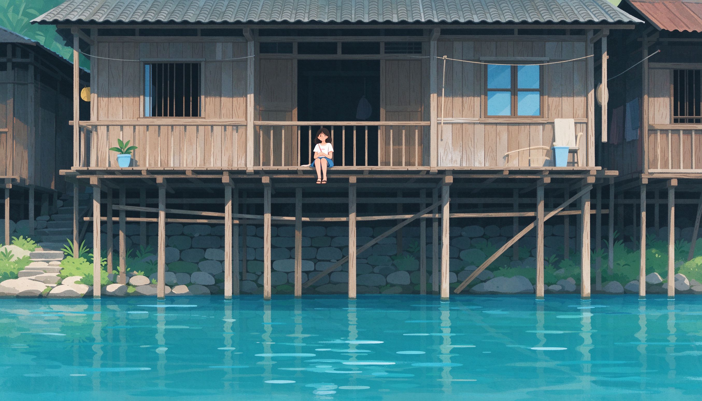
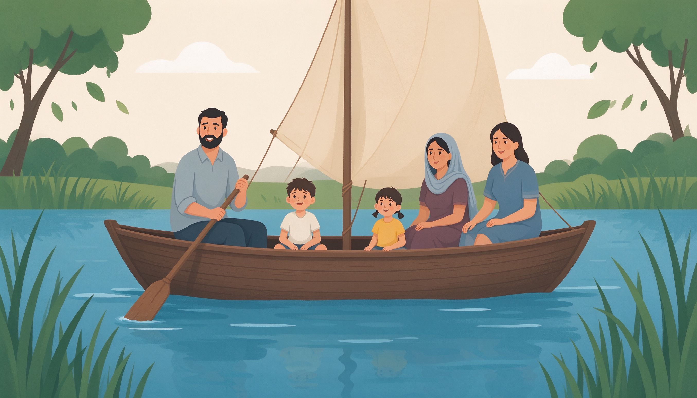
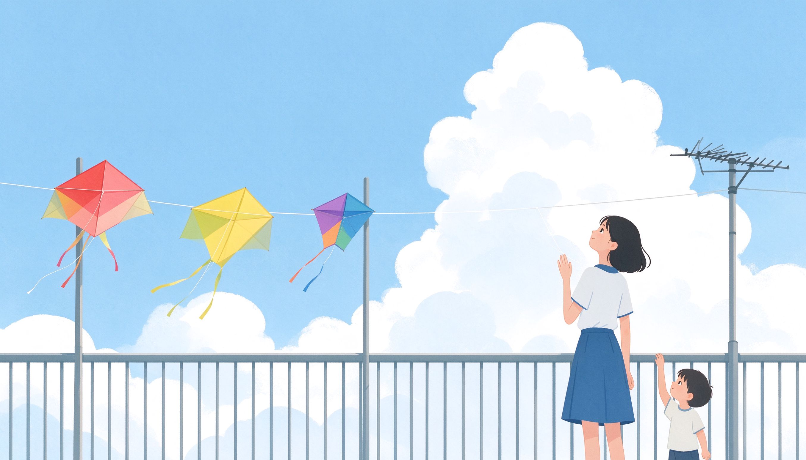
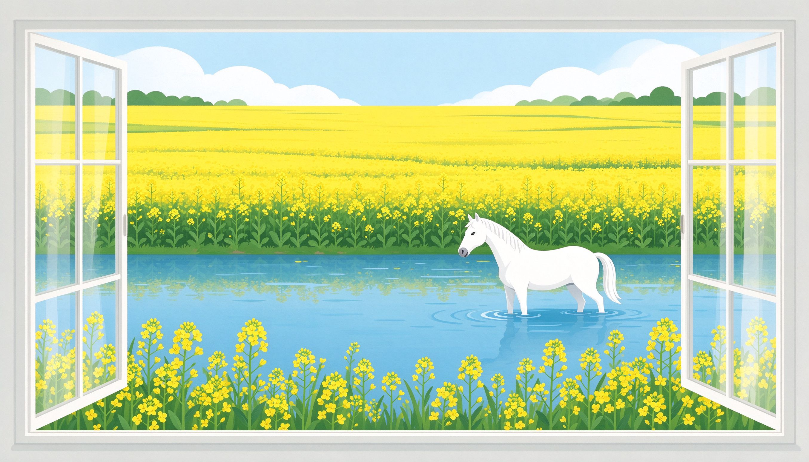
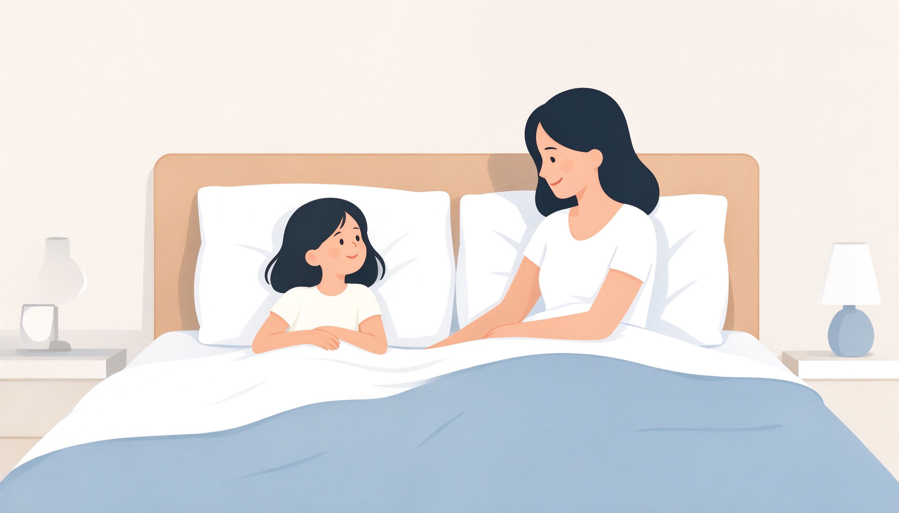
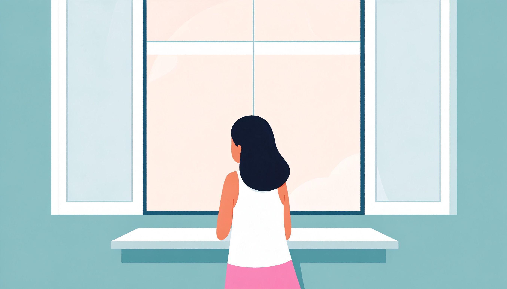
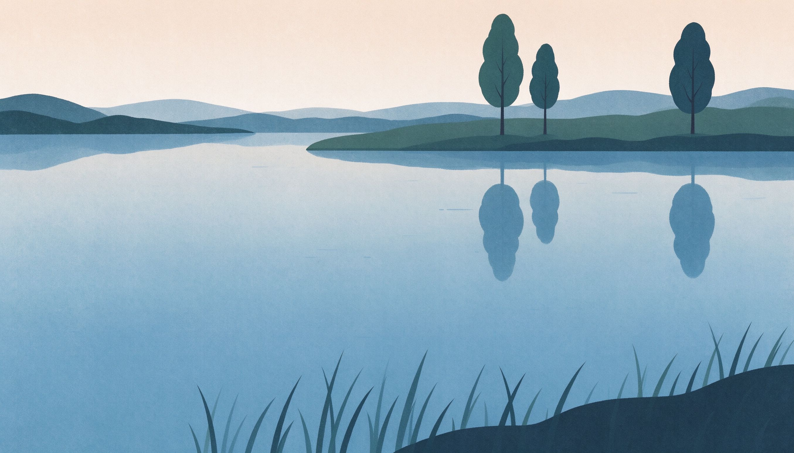

沈从文 · 平淡之笔写悲戚世事 · 短篇杰作
沈从文短篇小说经典文学等待悲欢人最幸福的时刻不是躺着刷手机，而是全神贯注做一件有挑战的事。心流，是主动掌控人生的方法。
女孩子岳珉年纪约十四岁，有一张营养不良的小小白脸，穿着新上身不久长可齐膝的蓝布袍子，正在后楼屋顶晒台上，与北生倚在朽烂发霉摇摇欲堕的栏杆旁，数天上的大小风筝。
他们是逃难来的，母亲、大嫂、姐姐、姐姐的儿子五岁大的北生。糊糊涂涂坐了十四天小小篷船，船到了这里以后，应当换轮船了，一打听各处，才知道武昌城还被围着，过上海或过南京的船车全已不能开行。

照妈妈的主张，找寻了这样一间屋子权且居住下来，打发随来的兵士过宜昌，去信给北京同上海，等候各方面的回信。在此住下后，妈妈同嫂嫂只盼望宜昌有人来，姐姐只盼望北京的信，女孩岳珉便想到上海一切。

河对面有一个大坪，绿得同一块大毡茵一样，上面还绣得有各样颜色的花朵。对岸种得有油菜，菜花黄澄澄的如金子。另外还有三匹白马，两匹黄马，没有人照料。

病人不说什么，想到刚才咳出的血，微微的笑着。「你咳嗽好一点吗？」「好了好了，不要紧的。珉珉我作了个好梦，梦到我们已经上了船，三等舱里人挤得不成样子。」其实这梦还是病人捏造的。

妈妈同嫂嫂只盼望宜昌有人来，姐姐只盼望北京的信，女孩岳珉便想到上海一切。她只希望上海先有信来，因为信里或许会提到爸爸和哥哥的平安。

满篇充满宁静和希望，满眼的美景却偏偏读到最后一句：一种悲凉蓦上心头，满腹揪心。

解锁你将获得：第 8-10 课完整内容（白塔与坟、结局的转折、静的真义）+ 全部 16 个互动游戏 + 全部 12 枚徽章 + 深度精读视频。
本书出自「熙祺智书」文学经典专题。配套阅读：《边城》《静》姊妹篇。